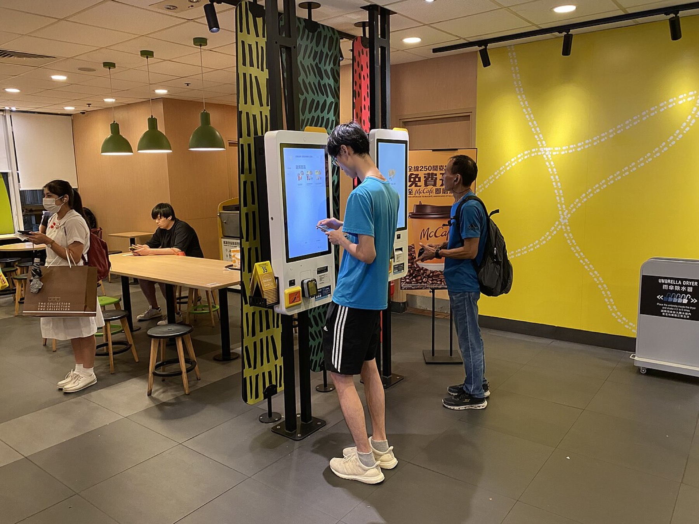
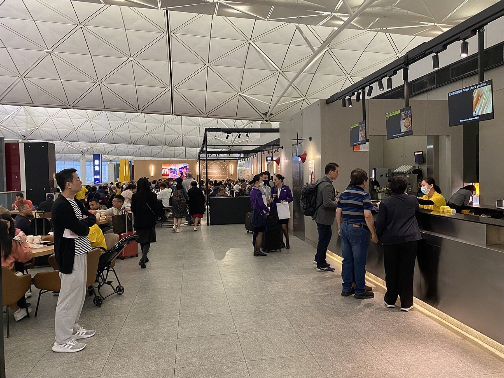
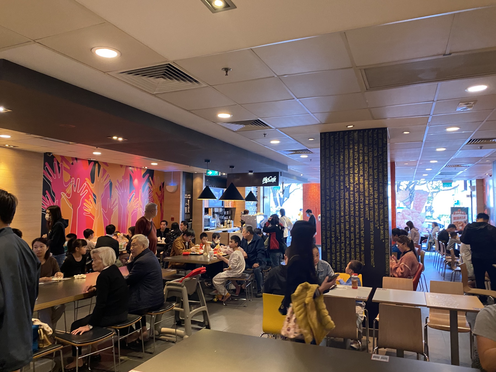
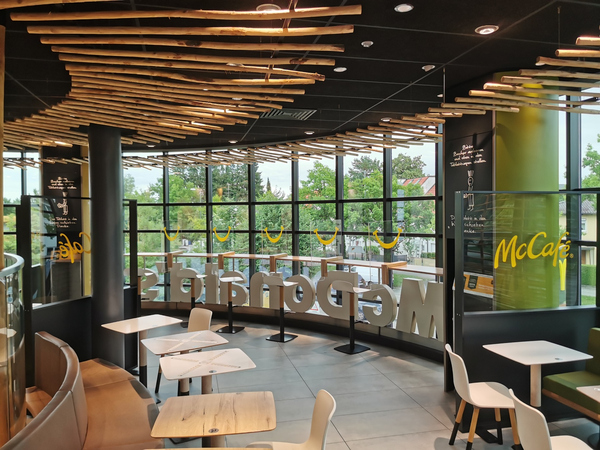
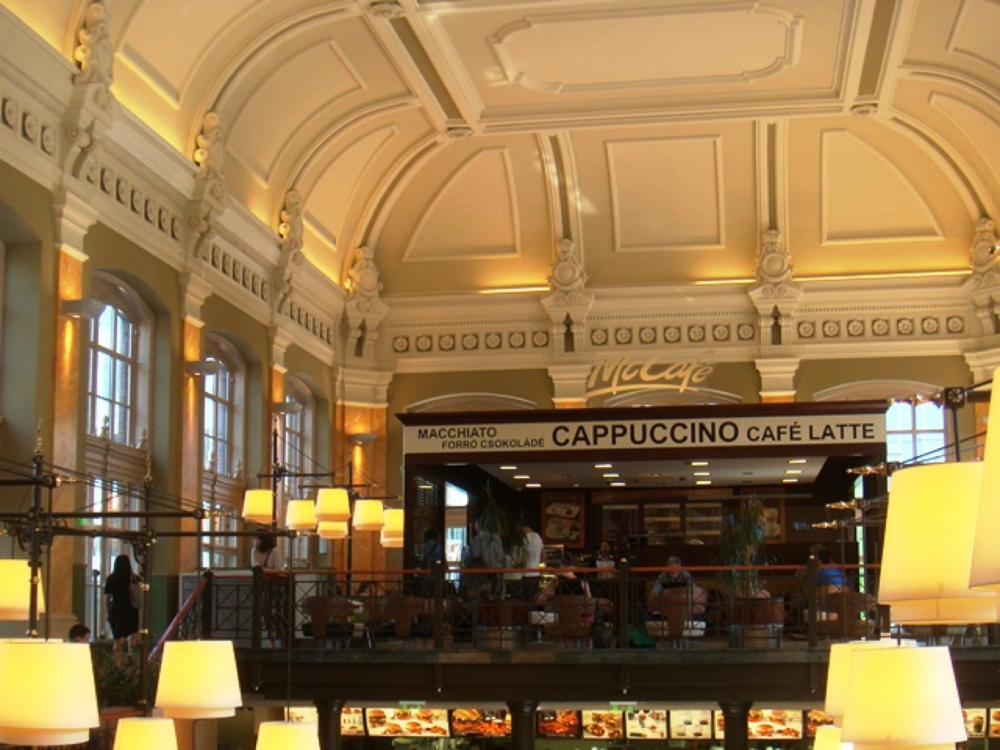

For a while there, I dearly loved telling a story that was pure nonsense. Why do you want to leave a McDonald's after 40 minutes? The answer rolled right off my tongue: the backrest is deliberately set at a right angle, the hard plastic digs into your ass, the red and yellow crank up your anxiety. One assembly line of trickery, start to finish. I posted that bit on Xiaohongshu and several other platforms, and the traffic was good every time. Each post would draw a crowd of thigh-slappers: no wonder, I always knew I couldn't sit still. I've since retracted the story. Only after re-examining photos from stores in four cities did I see it clearly: McDonald's seating has always been optimizing the business account.
And honestly, I felt pretty clever about it. Like I’d seen through something.
Then one day I was flipping through the store photos I'd accumulated on my phone, picking a few for a photo set. These came from stores in Hong Kong, Macau, Munich, and Budapest. By the second photo, my face had stopped cooperating. In the frame: ass-numbing hard plastic single chairs, and also padded, comfortable booths; high seats for eat-and-leave, and four-tops with a family gathered around them. I stared at the screen for a good few seconds. If McDonald's really ran some global regulation to keep you from sitting still, why would the same store contradict itself and put two completely opposite signals in one room?
That was when it clicked. What a viral story does is find a dramatic scapegoat for a familiar discomfort. Design was never really the subject.
Stop asking whether this chair is trying to kick you out. Ask instead: from the minute this store opens its doors, how many different kinds of people must it hold at once, and how long does each of them want to stay?
First, draw the boundary of the evidence: what photos can prove
Let me be blunt up front. Photos are on-site evidence, but evidence has limits. What they can prove is narrow: there is no globally uniform McDonald's chair to begin with. Put the four stores side by side and you can see at a glance that each arranges its own seating. What they can't prove is the official design intent behind any given chair. And no amount of staring at a photo will hand you the store's table-turnover rate.
So I did the embarrassing thing and went back into the original draft and deleted every scary-sounding number, every last one. Backrests precision-set at 95 degrees. Sitting 20 to 30 minutes and the human body inevitably rebels. Red makes your heart rate spike. Table turnover lifted 30% as a result. It all sounded professional, thick with the flavor of research. But chase me with the questions, where's the data, how big was the sample, which store did you measure, and I could produce none of it. Either made up, or copied from someone else, who had probably made it up too. Once design analysis props itself up with fake precision, the louder the conclusion, the emptier its foundation. I fell into that hole myself, and I traded it for clicks. Thinking back on it now is fairly mortifying.


Do the math, and the “kicking you out” story stops making sense
Full disclosure: I have no measured turnover data for these stores. The math below is purely an estimate I use to get the logic straight, not a measurement result. Follow it once, and you'll see exactly where the kick-them-out conspiracy stops adding up.
Picture a McDonald's at the base of an office tower or in an airport. Its profit for the whole day may rest on the two hours around lunch. Those two hours' yield per square meter, how much revenue one square meter can be squeezed to produce in an hour, basically decides whether the store stays alive or closes. Now go stand in the owner's chair and think. Would you rather have 100 people come in, each hogging an armchair for a full hour, or 300 people cycling through, each done in 20 minutes and clearing out fast? You could answer that one with your toes. The profitable stores are running exactly this math, and it has nothing to do with liking you, or with wanting to chase you off. Not one cent.
The trouble is, the people walking in aren't only the lunch rush. Mornings bring the old man with a coffee and a newspaper. Afternoons bring students doing homework. Weekends bring a family of three. What single chair could serve all of them at once? None can. So hard chairs, soft seats, high perches, and booths get mixed together, and that mix is really a shift schedule. Through combinations of seats, people who arrive at different hours and mean to stay for different lengths get sorted into different zones.
Seen this way, 'the hard plastic wants your ass to hurt' oversimplifies McDonald's and also takes yourself too seriously, as if the whole world revolved around your butt. Hard seats truly suit slouching less than thick padding does; but think about the environment the seat lives in. Wiped dozens of times a day, splashed with cola, smeared with ketchup, dragged around to clear cleaning paths. In a place like that, easy to wipe, built to survive, cheap to replace when broken: those are the top reasons it got chosen. That hard chair is genuinely not aimed at your ass. It serves, first, the staff who wipe tables dozens of times a day; then the manager who tallies costs at month's end; and the purchasing guy who can swap in a new one the moment it breaks. You feel chased off. They're just running a calculation that has nothing to do with you.
One fast-food chair is actually speaking for four parties
- Customer
- I finished in 10 minutes — can I find a seat right now? I brought my kid — is there a spot where we can sit together?
- Staff
- During rush hour can I wipe a table in three seconds? Does the chair block my cleaning cart?
- Operations
- How many turns per square meter per hour makes sense? Will dine-in and takeout collide at the counter?
- Brand
- In any city, any floor plan, the moment a customer pushes the door open, do they still recognize this as McDonald’s?
The same decision to go with hard chairs means sitting less for customers, easy wiping for staff, high turnover for operations, and uniform recognizability for the brand. Four parties' demands squeeze together and end up growing into the chair you're sitting on right now. Stop hunting for the person who wants to drive you out. This chair is simply the shape a pile of constraints takes once they've grown together.
Stop staring at one chair. Look at the combination.
A single chair can only express one posture. A set of seats expresses what kind of business this store means to run.
A row of high seats by the window: small footprint, fast turns, and one person with a tray can bolt a few bites standing up. Four-tops in the middle serve families and friends, higher ticket, longer stay. Continuous booths sit firm, resist being dragged off on a whim, and keep a corner where people who want to sit a while longer won't be chased off. Seats near the entrance turn over fastest; the corner deepest in tolerates the most conversation. None of this was arranged at random. It's a density strategy.


That's also why the McDonald's wants fast, Starbucks wants slow binary wears out after two uses. An airport Starbucks can hardly wait for you to grab your cup and go. A neighborhood McDonald's, of all places, has to take in old folks on a stroll and kids out of school. The brand draws the broad direction; the specific scene makes the call.
And there's a variable almost nobody mentions: time. Breakfast, lunch rush, after school, late night. Across one day, the same set of furniture serves completely different people. That two-top in the morning may be one person's temporary workstation, laptop open; at the lunch rush, that same one person occupying two seats turns it into a capacity bottleneck. Shoot a photo when the store is empty and you capture configuration, not use. To actually read it, go back at a different hour, watch which seats fill first, watch how the staff rearrange the room.
So how long you sit can't all be charged to the backrest. Outlets, Wi-Fi, which way the AC blows, noise, who you came with, how long the line is, how urgent your next appointment is: all of it works on you together. The chair is one link in that system. As for the countdown timer hidden in the furniture, sorry, it doesn't exist.
The Budapest store: the space itself is the destination

The most interesting thing about a chain brand was never how faithfully it replicates. Its real skill is splitting the world cleanly in two. Which things must stay globally identical: the menu, the service flow, the logo you recognize at a glance. Which things are allowed to vary with place: the seats, the materials, how long you're permitted to stay. Airport stores go for in-and-out; the old-building store makes you willing to come just to take photographs. A good system is one you still recognize after it has changed shape.
I moved this logic into digital products
People who build digital products share a deep-rooted bad habit: treating time spent as a self-evidently good metric, opening meetings with how do we get users to stay a little longer. For content platforms that's fine; they monetize how long you scroll. But when productivity tools start chasing the same number, I honestly want to curse. A productivity tool's job is to help people finish fast and leave fast, saying something nice about you on the way out. Take a tool whose purpose is getting things done and bend it toward a linger-longer metric. What is that if not brain damage?
What the seat combinations taught me: don't design a bland, middle-of-the-road dwell time for an average user who doesn't exist. Give the person in a hurry the shortest path. Give the one comparing prices a stable workbench. Give the one who shows up once in a while a clear exit. Metrics should follow the task too. Completion time, error rate, whether they come back, how far they explored: none of these should be stirred into one muddled pot of engagement.
One more thing, for myself and for colleagues. Next time you're about to say improve efficiency, hold yourself and ask: whose efficiency? The customer finding a seat faster is one kind. The staff clearing tables faster is another. The store turning tables faster is a third. Those three sometimes pull together and sometimes fight each other. Break the word efficiency into who, doing what, and your design discussion stops being led astray by a pretty but empty word.
Next time you push open the door of any chain store, ask yourself three questions
- Sort by task first: solo eaters, two people chatting, a whole family, takeout, queueing — where is each kind of person placed?
- Then look at the ratio: which seat type is most common, which is scarce? Ratios are way more honest than whether a single chair is hard or soft
- Finally, hunt for counterexamples: if you’re sure it’s trying to kick you out, how do you explain the booths, outlets, and corners that invite you to stay?
Four stores, compared from photographs
| Location | Visible in the photos | Design reading |
|---|---|---|
| Hong Kong street store | Stools, individual chairs and booths in the same room | One layout can serve short visits and groups sharing a table. |
| Hong Kong airport store | Open dining area and clear paths | Travellers with luggage need room to move through the dining area. |
| Macau store | Grouped tables and open paths | Table groups, queues and aisles are best read together. |
| Budapest historic building | Dining space inside a historic building | The building itself can be a reason to visit. |
The photos record visible layouts and materials. The design readings would need on-site data to verify dwell time or table turnover.
In my CollovGPT Pro Mode case study, I applied the same approach to separate the tasks of professional designers and casual users and decide where each control belonged.
- This piece is a visual and systemic analysis based on Joey’s store photos from several cities. It does not present seat angle, dwell time, or turnover rate as measured causal facts.
- Store photos are used to compare visible seat types, layout, and flow; confirming specific design intent still requires brand or design-team documentation